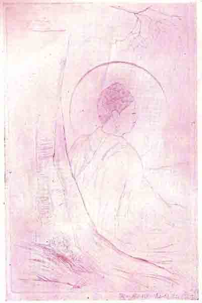
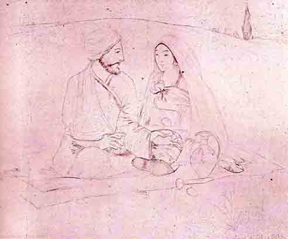

Two ‘Dry Points’
ARTIST: K. RAMA MOHAN SASTRY

"Buddha under the Bodhi Tree."
(Dry Point.)
Etching is widely practised in Europe at the present day, and ‘Dry Point’ is a fascinating variety of it. It is a linear method, and generally ‘sketchy’. But in the hands of an Indian Artist who is essentially a master of line, it yields a finished and lyrical charm, as may be seen from these two pictures. The feeling of colour is a special feature of the line in this method, but very little of the beauty of the original can be conveyed in a reproduction.
The Buddha's attainment of Liberation under the Bodhi Tree forms the theme of the first picture. "It is beautiful in the restraint and slight drawing and has a great deal of imagination" (‘The Madras Mail’) A duplicate is in the collection of the Hon. H. G. Stokes, C.S.I.
In the second picture, Omar is represented as seated by his Beloved and asking her to fill the cup to the last drop, for, "Tomorrow, why–who knows?" The falling rose-petals are highly suggestive.

"Omar."
(Dry Point.)